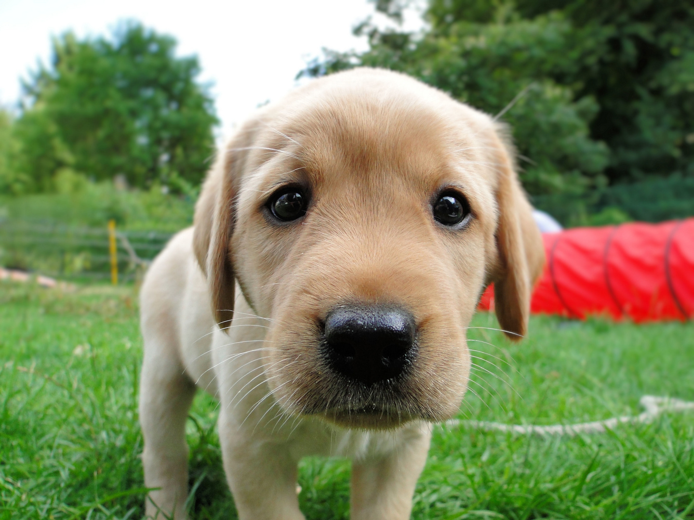
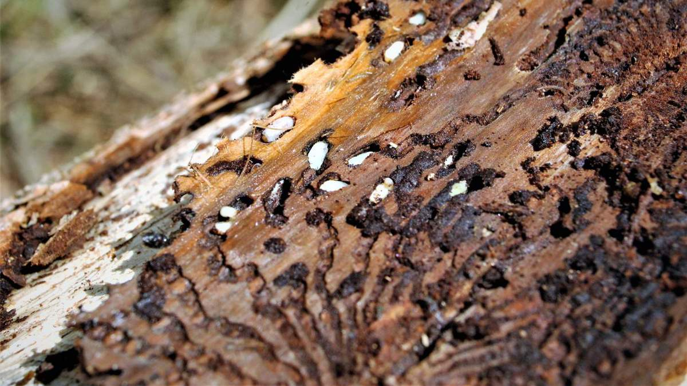

Borkenkäfer-Früherkennung in Österreich durch die Spürnasen Ausbildung.
Ein von uns ausgebildeter Spürhund erkennt Befall lange vor dem menschlichen Auge.


Wenn Nadeln braun werden, ist es meist zu spät. Die Absolventen der Spürnasen Ausbildung finden den Käfer bereits beim Einbohren unter der Rinde.
Während die Kontrolle mit dem Schaleisen erst bei gefällten Stämmen oder sichtbaren Fraßspuren erfolgt, erkennt der Hund die Pheromone stehender Bäume sofort.
Zertifizierte Trainingsmethoden für Mensch und Hund im forstlichen Einsatz.
Unsere Spürnasen finden frischen Stehendbefall mit überragender Genauigkeit.
Früherkennung ist das effektivste Mittel für den Erhalt unserer österreichischen Wälder.